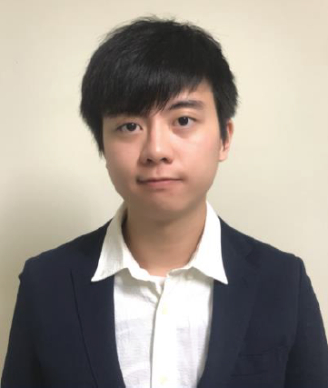

Welcome to KB's Homepage

Last updated Mar 25, 2019
Self Introduction
No.168, Sec.1, University Rd, Minhsiung, Chiayi, Taiwan
Studing in National Chung Cheng University (follow the link above) as a senior. Nice to meet you all!
As an ambitious student, not only do I act well on school a courses, but also spare no effort on GRE and TOFEL examination.
As an energetic guy, I will work out in the school gym once a week.
As an excellent programmer, I spend most of my spare time programming on my side projects (mostly on Machine Learning & Image Processing projects).
Contact me
- Taiwan, Taipei
- popotwtw@gmail.com
- https://www.facebook.com/popotwtw
Experience
CCU Machine Vision and Learning Lab; Viscovery AI Company
現任國立中正大學資工系 機器視覺實驗室實驗生
(Currently → CCU Machine Vision and Learning Lab Intern)
全國大專校院運動會 人臉辨識檢錄系統
(Currently → NIAG Face Recognition System Engineer)
Viscovery 創意引晴 實習生
(Former Position → Internship in Viscovery AI Company)
國立中正大學 吉他社教學長
(Former Position → Leader of Education in the Guitar Club)
國立中正大學資工系 副班代
(Former Position → CCU Vice Class Representative)
國立中正大學資工系 系學會公關長
(Former Position → CCU Leader of Public Relations)
Award Record
National Program Competition ITSA Laurel Tournament
2017.6 全國性程式競賽ITSA桂冠賽(闖關組)佳作
(National Program Competition ITSA Laurel Tournament Honorable Mention)
2017 下學期 國立中正大學校長獎
(CCU Academic Excellence Award 2nd Place)
2018 上學期 國立中正大學校長獎
(CCU Academic Excellence Award 1st Place)
2018.12 中區程式設計競賽佳作
(Central District Programming Competition Honorable Mention)Resume & Portfolio
Resume; Portfolio (Personal Github)
Here's my resume and protfolio which were uploaded on my personal github website. Viewers can clearly find out what school courses am I doing recently, and browse some side projects that I've done in the past. It is my honor to share all the stuffs with you!